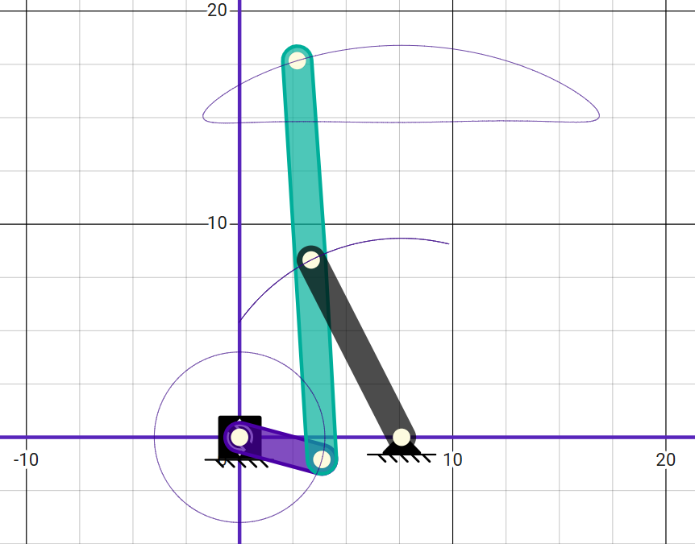
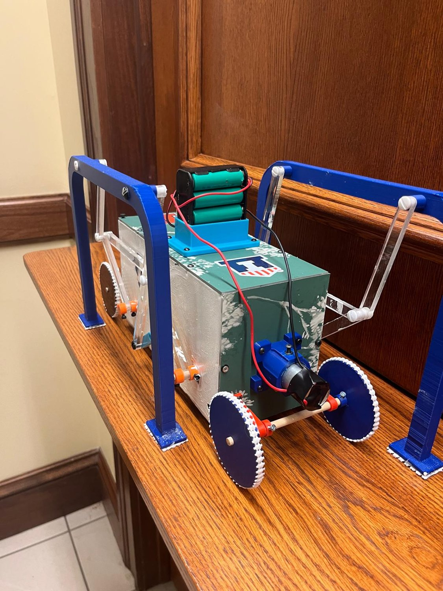

02 / ME 370 · MECHANICAL DESIGN
Chebyshev
linkage robot.
A robot designed to travel at least 4 m/min and dispense every 2 meters.

THE DESIGN
Why the Chebyshev linkage?
I led the design, PVA analysis, and manufacturing of the robot, including its Chebyshev linkage.
I chose the Chebyshev linkage because it required fewer links. The parts had relatively open tolerances, and adding more linkages could have caused unnecessary collisions.
The power was transferred from the linkage drive to the dispensing mechanism using bevel gears.

SIMULATION & TESTING
Validating the motion.

I simulated the linkage in PMKS to validate its trajectory before manufacturing.
In testing, the robot reached 6 m/min, with 7.5% error in dispensing distance.
IN MOTION
The robot in action.

THE RESULT
Built it. Tested it.
Exceeded the required 4 m/min minimum speed.
Measured displacement-distance error during testing.